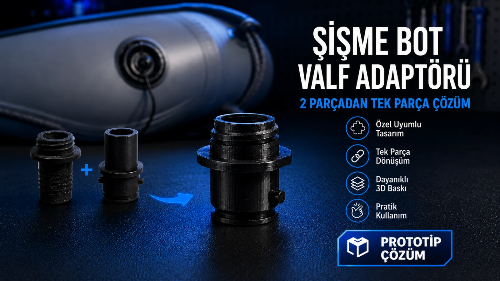
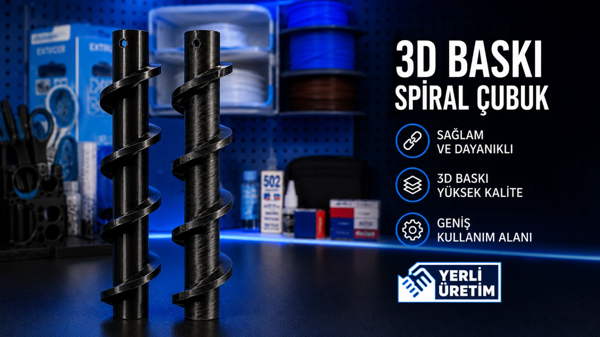

Kırılan parçalar
Elinde kalan örnek parçadan ölçü alıp geometriyi yeniden kurma ve test üretimi.
BG STUDIO PROTOTİP & PARÇA ÜRETİM
Kırılan, temini zorlaşan veya artık üretilmeyen parçaları fotoğraf, ölçü, örnek parça veya kullanım ihtiyacından başlayarak modelliyor; prototip ve fonksiyonel 3D baskı çözümüne dönüştürüyoruz.
Her parça 3D baskıya uygun olmayabilir. Önce kullanım yükünü ve geometriyi değerlendirip üretilebilir, pratik bir çözüm olup olmadığına bakıyoruz.
Elinde kalan örnek parçadan ölçü alıp geometriyi yeniden kurma ve test üretimi.
Temini kesilen basit plastik aksamlar için sıfırdan modelleme ve uygun üretim alternatifi.
İki ekipman arasında bağlantı sağlayan ölçüye özel adaptör, aparat ve geçiş parçaları.
Çalışma koşulları uygunsa özel spiral, yönlendirici, tutucu veya yardımcı mekanik parçalar.
Yeni bir fikrin ölçü, form ve kullanım senaryosunu hızlı test etmek için fiziksel numune.
İlk testten sonra ölçü veya formu revize edip daha doğru ikinci versiyona geçme.
Buradaki örnekler, ölçü ve kullanım ihtiyacından başlayıp fiziksel çözüme dönüşen gerçek üretimlerden seçildi.

Şişirme pompası ile bot arasında ihtiyaç duyulan ara parça ölçülendirilerek modellenip 3D baskı ile fonksiyonel prototip olarak üretildi.

Otel kullanımındaki çikolata şelalesi makinesi için spiral aksam, mevcut ölçüler ve çalışma ihtiyacına göre yeniden üretilerek fonksiyonel yedek parça çözümü hazırlandı.